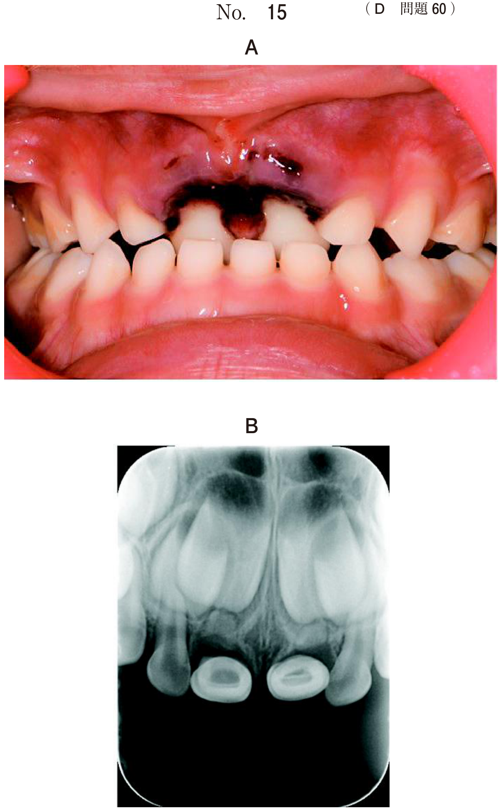

作業用模型（working cast）は、義歯を製作する際に使用する模型である。精密印象から製作され、義歯製作の基礎となる。
全部床義歯の維持には、物理的因子と生理的因子が関与する。
義歯床と粘膜の間に空気が入らないように封鎖することで、陰圧が生じて維持力が発揮される。
| 因子 | 内容 |
|---|---|
| 陰圧（吸着） | 辺縁封鎖、ポストダムによる封鎖 |
| 粘着力 | 唾液の介在による義歯床と粘膜の付着 |
| 界面張力 | 唾液の表面張力による付着 |
| 筋圧 | 口腔周囲筋による義歯の安定化 |
| 構造 | 役割 |
|---|---|
| 人工歯 | 咬合・審美（維持には直接関与しない） |
| 咬合面形態 | 咬合接触・咀嚼効率 |
| 義歯床研磨面 | 清掃性・審美性 |
義歯の写真（別冊No.24）を別に示す。
陰圧による維持の向上に関与するのはどれか。2つ選べ。

【解説】陰圧による維持の向上に関与するのは辺縁封鎖とポストダム。写真のウとエがこれらに該当する。人工歯や咬合面形態は維持には直接関与しない。